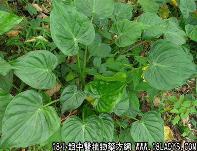

别名：尖尾峰、野芋头。
植物名：假海芋。
生长环境：本品为粗壮草本。生于林中湿地上。
分布：亚洲热带地区和我国南部。
入药部分：根块。
采集期：全年。
自采地点：荒地、郊野。
性味：性寒、味甘淡、有毒。
功能：解暑清热。
主治、用量和用法：1、癍痧大热：生用1斤，洗净去皮，切张，用清水十五碗，煎成两碗服，忌食盐；2、骨火痛：用法同上；3、痈毒大疮：生用、切去皮、捣烂，外敷患处。
附录：（叶）治远年烂肉、用鲜叶适量，放入黑醋内，蒸半小时，取叶敷患处。
（方歌）大热癍痧症势凶，痕芋头寻尖尾峰，生用一斤水四倍，煎成两碗服即崧。
参考资料：《广东中医》（58年一期）痕芋头治肺集合经验：1、将鲜痕芋头（注意不可湿生水）去皮、和米卷为粉，将粉晒干煲粥食。2、将痕芋头切片，晒干，和面粉作汤丸食。3、将痕芋头干片加白糖共煮服（待水沸后，才可投入痕芋头共煮），一般服三个月即愈。此外，以之治痢疾三天即愈。以之治狂犬病毒，若遇狂犬咬后，即以本药捣烂敷伤口，再内服解毒药即愈。
《广东中医》（59.7）内记载治疗伤寒17例观察，一般于服药后6至天，体温恢复正常。内4例于服药后6天仍不退热而加服三皇汤获愈。
《广东中医》（59.10）汕头市商业职工诊所报导：野芋汤治浸润型肺结核21例，症状消失及进步的17例，占80.9%，X光复查好转及基本治愈14例。
《广东中医锦方选集第一集》据湛江专区报导：鹤地水库北联生产大队一百多人，其中患流感者20人，饮野芋汤后，当晚退热，以之与百余人作预防饮料，仅一人发病。
处方：野芋头10斤、大米半斤、白盐2两、水40斤、先将野芋切碎，洗净与大米白盐混合，锅炒30分钟，至大米炒成黑色，放水40斤，再煮30分钟，至米烂时，即可服用，每服半口盅，日三次，至退热为止。
《广东中医锦方选集第一集》新会县棠下中心医院以痕芋头治疗肺结核22例，其中13例症状全部消失，2例经X光检查证明已愈，5例显著好转。
处方：痕芋头晒干，去皮，切为薄片（切勿接触水分，否则易生副作用或中毒）。待水煎沸时，将痕芋头放入（切勿搅动），煎至一小时，去火取汁，作为内服药剂，剂量：从4两痕芋头开始，每天增加一两，增至12两后，即每天减1两，减至4两，又每天加1两，加至12两后停止5～17天再服。
《广州市中医验方选集第一集》市一人民医院以木芋头（去皮）半斤、加米一撮，治湿温高热有效，制法：以竹篾将木芋头穿好，悬于粥锅内和米煮粥，约煎六、七小时服之。
附：民间亦有用木芋头代本品，效果相同。
本品亦有称作“狼毒”者，惟与《本草纲目》所记载“狼毒”品种不同，不可混用。